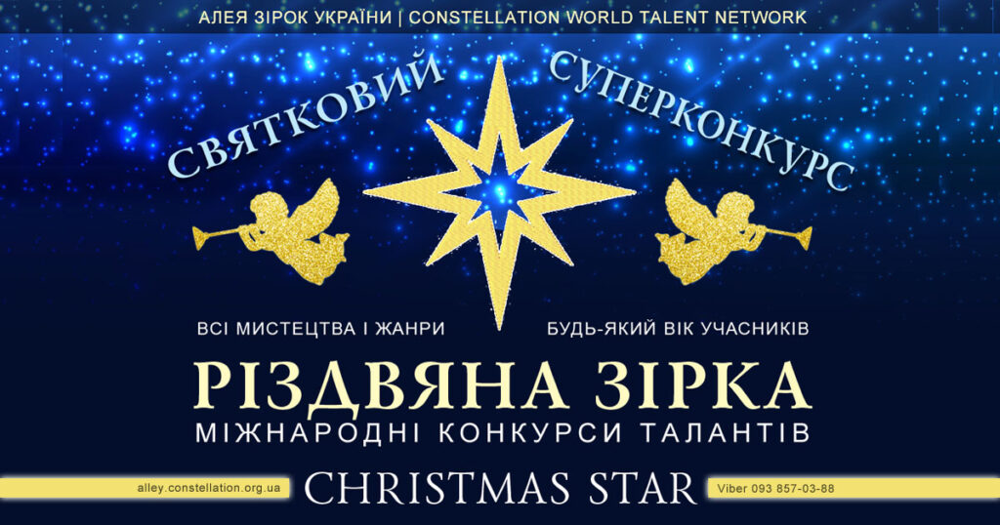

ГОЛОВНА
КОНКУРСИ
КОНТАКТИ
ГОЛОВНА
КОНКУРСИ
КОНТАКТИ

РІЗДВЯНА ЗІРКА – міжнародний конкурс і творча програма, яка публікує, рекламує і просуває творчі роботи учасників, яка робить таланти відомими.
Це конкурс міжнародної асоціації мистецьких та освітніх конкурсів Constellation World Talents, національної творчої освітньої екосистеми Алея Зірок України та міжнародної освітньої компанії AdverMAN Education.
Детальніше про конкурс Різдвяна зірка
Alisa Kvasnyak 2025